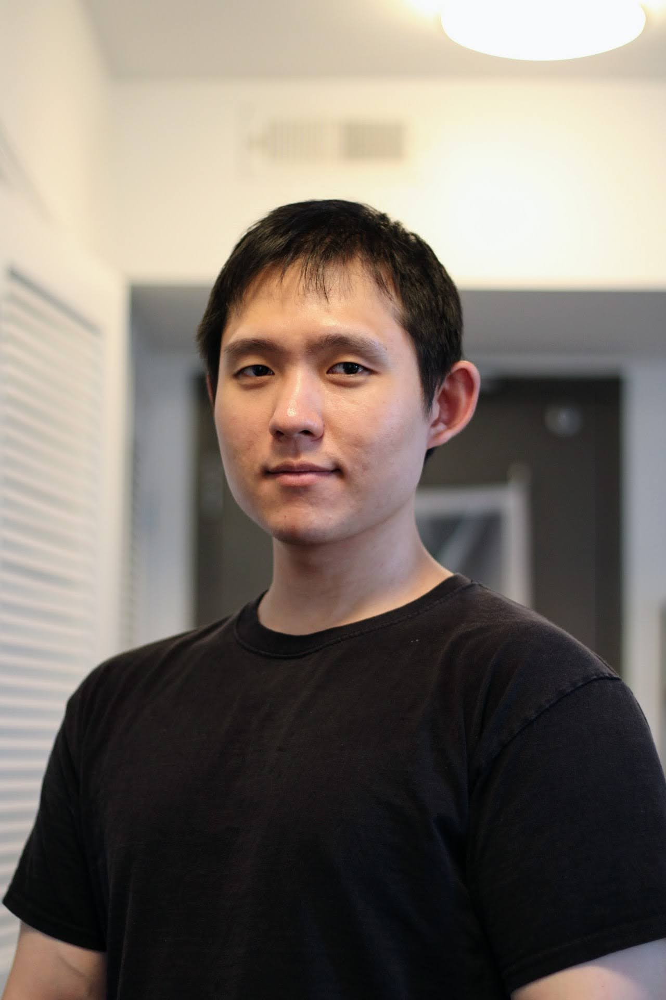

Jin Heo received his Ph.D. in Computer Science from the Georgia Institute of Technology.
During his doctoral studies, he conducted pioneering research in distributed and multimedia systems under the guidance of Prof. Ada Gavrilovska.
He is currently a Senior Researcher at Dolby Laboratories, focusing on applying research to industry settings.
His research lies at the intersection of distributed systems and immersive multimedia systems.
With the increasing computational demands of real-time and interactive multimedia use cases, he focuses on developing systems that can efficiently handle these computationally intensive workloads.
Specifically, he works on designing system architectures and optimization techniques that enhance efficiency, scalability, and user experience for high-load applications such as XR (Extended Reality) and cloud gaming in resource-constrained environments.
The ultimate goal of his research is to enable better user experiences and deliver high-quality real-time services to a broader audience through the utilization of edge computing and distributed processing.
His academic journey began following an early career as a professional gamer, which sparked his initial interest at the cross-section of computer science and video game design/development.
This experience significantly influenced his current research focus on high-performance systems and immersive applications.
